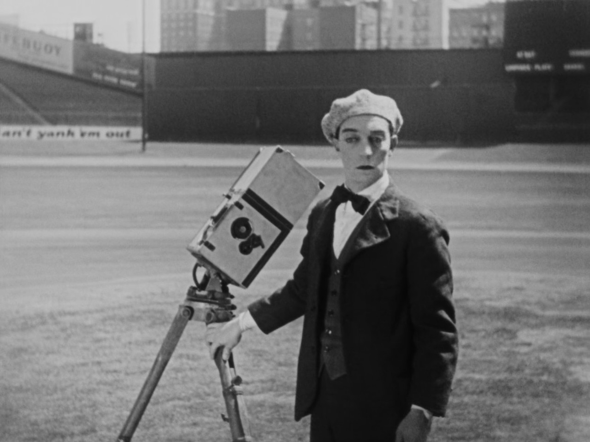

The Cameraman, frame at 17:04
Edward Sedgwick and Buster Keaton · 1928 · Silent film, black and white (frame)
Free to use
Buster Keaton signed with Metro-Goldwyn-Mayer on 26 January 1928 for 3,000 dollars a week, and this was his first film there; the studio paid him 1,250 dollars for the idea. Twenty-two writers were assigned to it, but Keaton persuaded Irving Thalberg to throw out the script and let him film it his own way. Once thought lost in the 1965 MGM vault fire, it survives from a print found in Paris in 1968 and another found in 1991.